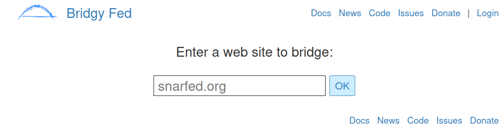
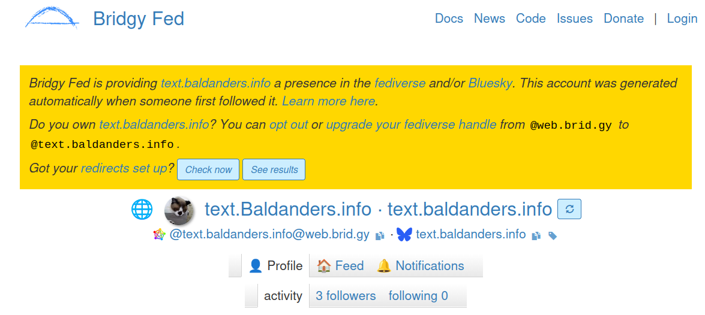
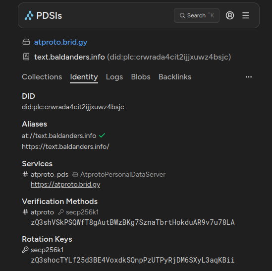

ブログを Fediverse & Atmosphere に参加させる

随分前に Bridgy Fed を利用して Bluesky と Mastodon を相互接続させる方法を紹介したが，同じサービスを使ってブログなどの Web サイト（の更新）を Bluesky/Atmosphere および Mastodon/Fediverse と連携させることが出来るようだ。
登録自体は簡単で，以下のページでブログの URL を入力するだけ。

成功すれば以下の画面に遷移する。

RSS フィードを備えているサイトであれば問題なく登録できるはず。 サイトの登録は誰でもどのサイトでもできる。 勝手に登録されてしまい取り消したいのであれば，オプトアウトの手続きを行う必要がある。
If you’re on the web, email us from an address at your web site’s domain to show that you own it, or you can put the text #nobridge in the profile on your home page and then update your profile on your user page.
初期状態では Bluesky ハンドルは @yourdomain.com.web.brid.gy に， Mastodon ハンドルは @yourdomain@web.brid.gy になっている。
たとえばサイトのドメインが text.baldanders.info であれば，それぞれ
@text.baldanders.info.web.brid.gy(Bluesky)@text.baldanders.info@web.brid.gy(Mastodon)
となる。
このうち Bluesky ハンドルはサイトのドメイン名に変更可能である。
変更方法は以前書いた記事を参照のこと。
DNS の TXT レコードまたは /.well-known/atproto-did ファイルに DID を設置すれば勝手に更新してくれるみたい。
ちなみに，ここのブログのように GitHub Pages で独自ドメインにしている場合は DNS の TXT レコードが使えないため /.well-known/atproto-did ファイルに DID を書いて設置した。
この場合 /_config.yml ファイルに以下の記述を追加する必要がある。
include: [".well-known"]
最終的には以下のハンドル名になった。

Mastodon ハンドル名の web.brid.gy の部分を独自ドメインに変えることもできるようだが，このブログではメリットが薄い（かえってハンドル名が長くなる）のでやらないかな。
Fediverse の各サービスや Bluesky 等とやり取りするために IndieWeb や Webmention が推奨されているみたいだが，これは後日調査して可能なら対応するか。
今回はここまで。